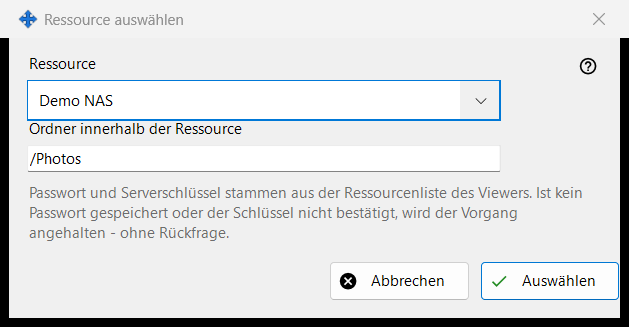
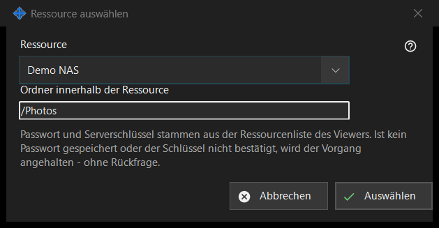

Ressource auswählen
Verwendungszweck
Wählt eine Ressource aus der Ressourcenliste des Viewers als Quelle oder Ziel eines geplanten Vorgangs. Das Fenster öffnet sich über «Ressource..» neben Quelle oder Ziel im Fenster des geplanten Vorgangs.


In dieser Reihenfolge
- Wählen Sie die Ressource in der Liste «Ressource».
- Prüfen oder ändern Sie «Ordner innerhalb der Ressource»; er beginnt im Stammordner der Ressource.
- Klicken Sie auf «Auswählen». «Abbrechen» behält den bisherigen Ort.
Die Elemente
Ressourcenliste
Angeboten werden nur die SFTP-Server und Netzwerkordner aus der Liste des Viewers, nach Namen sortiert; Ressourcen anderer Art erscheinen nicht. Gibt es keine, sagt das Fenster: «In der Ressourcenliste gibt es keine passenden Ressourcen. Fügen Sie im Viewer einen SFTP-Server oder einen Netzwerkordner hinzu.», und «Auswählen» bleibt deaktiviert. Das Hinzufügen einer Ressource oder das erneute Bestätigen ihres Vertrauens geschieht im Viewer; dieses Fenster baut keine Verbindung auf.
Ordner innerhalb der Ressource
Der Ordner muss im Stammordner der gewählten Ressource liegen, sonst lehnt ihn «Speichern» im Vorgangsfenster ab. Die Wahl einer anderen Ressource füllt das Feld mit deren Stammordner neu.
Läuft ohne Rückfragen
Das Passwort und der Serverschlüssel stammen aus der Ressourcenliste des Viewers. Ein Lauf fragt nichts: Ist das Passwort nicht gespeichert oder der Serverschlüssel nicht bestätigt, bricht der Vorgang ab, und der Verlauf nennt den Grund. Eine schreibgeschützte Ressource kann nicht Ziel eines Verschiebens oder Löschens sein, eine Ressource, deren Stammordner per PIN geschützt ist, wird abgelehnt, und ein Archiv nimmt nur gewöhnliche Ordner an.
Managereinstellungen · SFTP-Freigabeeinstellungen · Einstellungen des Austauschservers